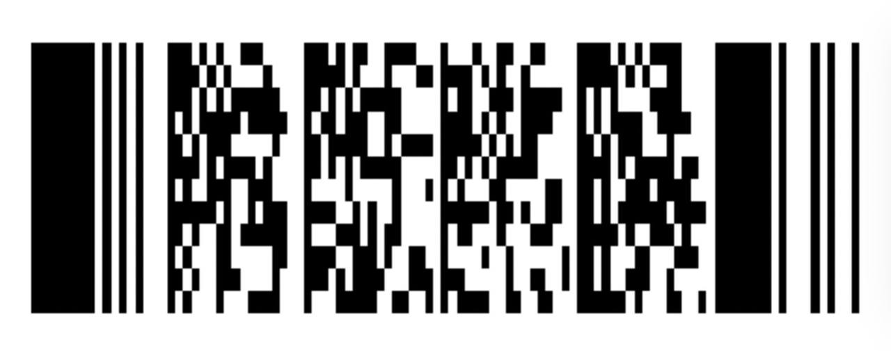

Бонусная карта «Лента» в фиолетовом
Штрихкод, который читает сканер

Бонусная карта Лента. Эта страница хранит штрихкод бонусной карты Лента. Откройте её на кассе и дайте кассиру отсканировать код.
Три шага у кассы
- Достаньте телефон и откройте страницу
- Поверните экран штрихкодом к сканеру
- Проверьте на чеке, что бонусы учтены
Совет: ночью или в тёмном зале включите максимальную яркость.
Частые вопросы
Почему стоит смотреть чек?
Так вы убедитесь, что карта распознана и бонусы начислены.
Можно ли держать телефон горизонтально?
Да, штрихкод широкий, и в горизонтальном положении его часто читать удобнее.
Нужна ли регистрация на сайте?
Нет, сайт ничего не требует: просто откройте страницу.